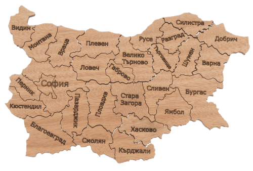

<section id="breadcrumbs">
  <nav class="breadcrumb" aria-label="breadcrumbs">
    <ul>
      <li class="is-active"><a routerLink="/beegardens">
        <span class="icon is-small">
          <i class="fas fa-home" aria-hidden="true"></i>
        </span>
        <span>Пчелини</span>
      </a></li>
    </ul>
  </nav>
</section>


<div class="btn-wrapper" [ngStyle]="{'display': (loginStatus$ | async) ? '' : 'none' }">
  <button mat-stroked-button class="addBtn" (click)="addGarden()">
    Създай нов <mat-icon>add</mat-icon>
  </button>
</div> 
<div
  class="bee-gardens-container grid grid--cols-5 grid--row-gap-20 grid--column-gap-60"
>
  <div *ngFor="let beeGarden of beeGardens" class="bee-gardens-card">
    <div class="card-wrapper">
      <mat-card class="example-card" (click)="onClick(beeGarden)">
        <mat-card-header>
          <div mat-card-avatar class="example-header-image"></div>
          <mat-card-subtitle>{{ beeGarden?.name }}</mat-card-subtitle>
        </mat-card-header>
        
        <mat-card-content> </mat-card-content>
        <mat-card-actions>
          <p class="control has-icons-left">
            <span class="icon is-small is-left">
              <i class="fas fa-map-marker-alt"></i>
            </span>
          </p>
          <div id="location">{{ beeGarden?.lat + ', ' + beeGarden?.lng }}</div>
        </mat-card-actions>
      </mat-card>
      <div class="box" [style.background-color]="'' | randomColor"></div>
    </div>
  </div>
</div>
